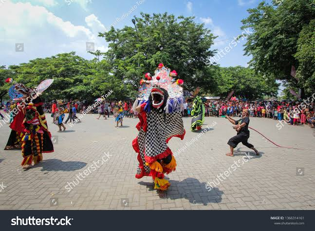

Barongan Bojonegoro
Barongan Bojonegoro adalah kesenian tradisional khas Bojonegoro, Jawa Timur, yang memadukan unsur tari, musik gamelan, dan cerita rakyat. Tokoh utamanya adalah Barong, makhluk besar mirip singa atau naga yang melambangkan kekuatan, keberanian, dan pelindung masyarakat dari kejahatan.